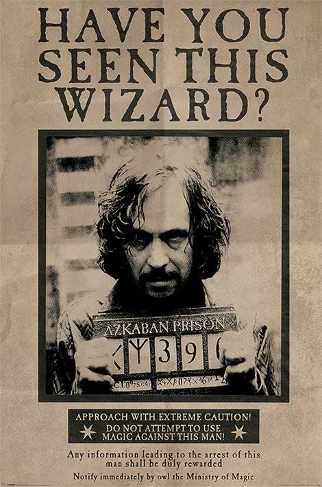
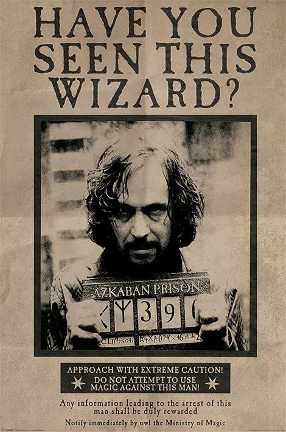
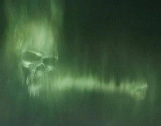

Sirius Black escapes from Azkaban
The infamous prisoner is still eluding capture, despite the Ministry's efforts.
The infamous prisoner is still eluding capture, despite the Ministry's efforts.
The appearance of the Dark Mark shocked and frightened World Cup attendees. The culprits of this transgression are still at large.
